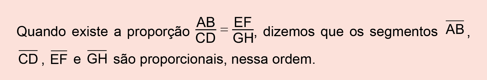
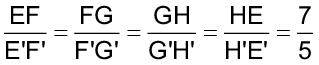
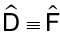
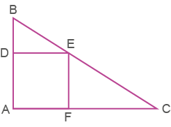
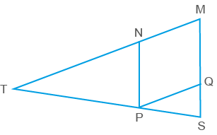

Semelhanças
Carla é arquiteta e está fazendo a planta da fachada de uma casa. Observe na fotografia a fachada da casa e o respectivo desenho.
Yuri Arcurs / People Images
converse

São Francisco, Califórnia (EUA). Maio, 2010.
K1ng / Flickr
1. Explique como Carla fez para realizar o desenho da fachada dessa casa.
2. Na situação apresentada, as medidas do desenho são proporcionais às medidas reais? Em relação às medidas dos ângulos correspondentes, eles são proporcionais ou congruentes?
3. Observando as medidas representadas na fotografia e as medidas representadas no desenho, qual foi a escala utilizada?

1 m
1 m
0,7 cm
0,7 cm
Sérgio Bonfim / Acervo da Editora
Reinaldo Rosa / Acervo da Editora.
Relembrando razão e proporção
Situação 1
Solange queria medir o comprimento do tampo de uma mesa de centro, mas não tinha um metro ou uma régua para fazê-lo. Decidiu, então, realizar essa medição utilizando o palmo. Sua filha, Marcela, de 10 anos, quis ajudá-la e também mediu o tampo usando o palmo.
Solange encontrou como medida 6 palmos, e sua filha, 9 palmos.
Note que 2 palmos de Solange equivalem a 3 palmos de Marcela.
Razões especiais
Vimos que algumas razões são utilizas em diversas situações e muitas delas envolvem duas ou mais grandezas, observe algumas:
Proporção
Situação 2
Victor deseja ampliar uma fotografia que tem 10 cm de largura por 15 cm de comprimento, de modo que sua largura tenha 12 cm.
Para resolvermos as situações propostas, utilizamos os conceitos de razão e proporção estudados nos anos anteriores. Vamos relembrá-los?
Situação 3
Em uma editora de livros existem 3 impressoras que imprimem em 4 dias, ligadas por 6 horas, 30 000 páginas. Para aumentar a quantidade de impressos será incluído uma máquina e aumentado o tempo de 6 para 8 horas diárias. Quantas páginas serão impressas em 5 dias?
Vamos entender como podemos chegar a essa solução organizando os dados em um quadro:
|
Impressoras |
Dias |
Horas |
Páginas impressas |
|
3 |
4 |
6 |
30 000 |
|
4 |
5 |
8 |
X |
Devemos analisar a grandeza “páginas impressas” com as demais grandezas. Ao observar os dados, podemos perceber que:
Assim, temos:
|
Impressoras |
Dias |
Horas |
Páginas impressas |
|
3 |
4 |
6 |
30 000 |
|
4 |
5 |
8 |
x |
Como todas as grandezas são diretamente proporcionais à grandeza “páginas impressas”, então a multiplicação de suas razões corresponde à razão da grandeza que se tem a incógnita x.
9x = 600000
Serão impressas 66 666 páginas por dia.
Neste exemplo, utilizamos a regra de três composta.
Segmentos proporcionais
Podemos calcular a razão entre as medidas de dois segmentos de reta. Observe:
Usando a mesma unidade de medida, a razão entre as medidas dos segmentos e  pode ser representada por:
pode ser representada por:
A razão entre as medidas dos segmentos e é .
Agora, observe os segmentos , , e :
, e e anotem os valores encontrados..
Se formam uma proporção, então temos: AB ∙ GH = CD ∙ EF.
⇔ 2 ∙ 12 = 4 ∙ 6
Segmentos e proporções
Reinaldo Rosa / Acervo da Editora.

Farol das Conchas. Ilha do Mel, PR, 2015.
Otávio Nogueira / Flickr
Encontre soluções
a) c)
b) d)

Reinaldo Rosa / Acervo da Editora.
Vamos inicialmente estudar uma propriedade importante, a propriedade em um feixe de retas paralelas, para então enunciar o Teorema de Tales.
Na figura, temos as retas transversais u e v, que determinam sobre o feixe de retas paralelas r, s e t os segmentos de reta ,  , e . Temos ainda que e são congruentes entre si, ou seja, .
, e . Temos ainda que e são congruentes entre si, ou seja, .
Paralelismo
Observe as seguintes retas:

As retas r, u e s são coplanares e chamadas de feixe de retas paralelas. A reta t, que corta esse feixe, chama-se reta transversal.
Indicamos o feixe de retas paralelas da seguinte maneira: r // s // u.
Teorema de Tales
Segundo a tradição, a Geometria demonstrativa começou com Tales de Mileto, um dos “sete sábios” da Antiguidade, durante a primeira metade do sexto século a.C. Segundo parece, Tales começou sua vida como mercador, tornando-se rico o bastante para dedicar a parte final de sua vida ao estudo e a algumas viagens. Diz-se que ele viveu por algum tempo no Egito e que despertou admiração ao calcular a altura de uma pirâmide por meio da sombra. [...]
EVES, Howard. Introdução à história da Matemática.
Trad. Hygino H. Domingues. 2. ed. Campinas: Editora da Unicamp, 1997. p. 94-95.
Ilustração de Tales de Mileto feita por Ernst Wallis para o livro
Illustrerad verldshistoria utgifven av E. Wallis (Volume I), de 1875.
r
s
t
C
B
A
u
v
D
E
F
Lavallen / wikimedia.commons
A partir dos pontos D e E, traçamos os segmentos e , paralelos à reta transversal u.
Como os segmentos e são congruentes, a razão entre suas medidas é 1, ou seja, = 1.
Vamos mostrar que e também são congruentes entre si e que, por isso, a razão entre eles também é igual a 1.
Dessa forma, temos que:
Então:
C
B
A
u
v
G
H
D
E
F
s
t
r
C
B
A
u
v
G
H
D
E
F
s
t
r
Se um feixe de retas paralelas determina segmentos congruentes sobre uma transversal, então os segmentos de retas determinados sobre qualquer outra transversal também são congruentes entre si.
E se os segmentos de reta determinados pelas transversais não forem congruentes? Qual relação podemos estabelecer entre eles? Vejamos:
Considerando r // s // t e m e n as retas transversais sobre essas retas paralelas, vamos utilizar uma unidade de medida x, sendo x um número racional, tal que AB = 3x e BC = 4x.
Observe que DE = 3y e EF = 4y.
Assim, temos:
Podemos concluir que e são proporcionais a e , ou seja, .
Por meio da demonstração feita, podemos enunciar o Teorema de Tales:
ΔDGE ≡ ΔEHF pelo caso de congruência ALA.
Então, ≡ , ou seja, = 1.
DGE ≡ EHF
≡
GDE ≡ HEF
C
x
x
B
x
x
x
A
x
x
m
n
y
D
y
y
y
E
y
y
y
F
r
s
t
Verifiquem se as medidas dos segmentos , , e , nessa ordem, formam uma proporção. Anotem suas conclusões no caderno.
2. Observem a situação a seguir e expliquem como podemos calcular o valor de x. Depois, calculem-no.
Na figura abaixo, r // s // t.
Um feixe de retas paralelas determina, sobre as retas transversais, segmentos de retas que são proporcionais.
Atenção!
Vamos agora verificar a aplicação do Teorema de Tales.
, e formados pelo feixe de retas paralelas cortadas por duas transversais. Anotem essas medidas no caderno.C
B
A
u
v
D
E
F
r
s
t
Encontre soluções
 são paralelos. Calcule a medida dos segmentos e ..
são paralelos. Calcule a medida dos segmentos e ..
x
6
5
10
a
c
b
28
10
14
y
a
b
c
a
2
b
3
x
18
c
5
9,5
y
4
a
b
c
2x
3
4
3x - 1
a
b
c
y
25
18
20
c
b
a
x
11
8
16
c
b
a
B
(y + 5) cm
D
y cm
A
4 cm
E
8 cm
C
(y + 2) cm
B
y cm
D
A
9 cm
(5y + 2) cm
E
14 cm
C
(2x - 1) cm
(x + 2) cm
D
B
A
16 cm
E
22 cm
C
26 cm
x
y
z
t
5
6
d
c
b
a
7
4
e
f
14
8
16 m
Avenida dos Estados
Rua Tapajós
18 m
unidade 2 - capítulo 2
2
As fotos a seguir retratam a mesma imagem, porém com tamanhos diferentes. Observe-as com atenção.
Na situação apresentada, as figuras são denominadas de figuras semelhantes.
Polígonos semelhantes
Figuras semelhantes
David Mark / Pixabay
unidade 2 - capítulo 2
Os lados correspondentes ou homólogos do quadrilátero II correspondem ao triplo da medida do quadrilátero I. Os ângulos correspondentes nos dois quadriláteros têm a mesma medida, ou seja, são congruentes.
Observe, agora, os polígonos ABCD e A’B’C’D’:
≡ , ≡ , ≡ e ≡
A razão de semelhança é igual a  .
.
I
II
Encontre soluções
Nessas condições, determine:
Os ângulos correspondentes desses polígonos são congruentes e os lados homólogos, proporcionais. Em tais condições, dizemos que o polígono ABCD e o polígono A’B’C’D’ são semelhantes.
Em linguagem matemática, essa informação é representada da seguinte maneira:
ABCD ~ A’B’C’D’
Símbolo de semelhança
(Lê-se: o polígono ABCD é semelhante ao polígono A’B’C’D’.)
Agora, observe os polígonos EFGH e E’F’G’H’.

Os lados homólogos desses polígonos são proporcionais, porém os ângulos correspondentes não são congruentes. Logo, os quadriláteros EFGH e E’F’G’H’ não são semelhantes.
Homotetia
Veremos agora uma transformação geométrica que nos permite reproduzir, ampliar ou reduzir figuras. Essa transformação, em geral, não preserva a congruência entre as figuras, porém nos permite encontrar figuras semelhantes.
A homotetia é uma transformação geométrica que realizamos a partir de um ponto fixo, denominado centro de homotetia, e uma razão dada, chamada de razão de homotetia.
No caso da ampliação de uma figura, a razão de semelhança deve ser sempre maior que 1. Quando é menor que 1 e maior que zero, obtém-se uma redução. E quando a razão é igual a 1, temos a reprodução da mesma figura, isto é, congruente à figura inicial dada.
Vamos ampliar o polígono a seguir com uma razão de semelhança igual a 2.
1.o Marcamos o ponto O, centro de homotetia, a uma distância qualquer da figura.
2.o Traçamos as retas que passam por O e pelos vértices do polígono ABCD.
3.o Com o auxílio de um compasso, determinamos A’ na reta que contém o ponto A, de modo que OA’= 2 ∙ OA. Repetimos o mesmo procedimento para obter B’, C’ e D’.
4.o Traçamos os lados do polígono A’B’C’D’.
Pronto! O polígono ABCD foi ampliado.
Agora, vamos verificar como realizar a redução de uma figura. Nesse caso, para que ocorra uma redução, a razão (k) de homotetia deve ser maior que zero e menor que 1, ou seja, 0 < k < 1.
Reduzindo uma figura, com k =  .
.
1.o Marcamos o ponto O, centro de homotetia, a uma distância qualquer da figura.
2.o Traçamos as retas que passam por O e pelos vértices do trapézio ABCD.
3.o Vamos traçar uma reta auxiliar para dividir o segmento em três partes iguais.
4.o Utilizando o compasso, com a ponta-seca em O, marcamos sobre a reta auxiliar três arcos de mesmo raio. Em seguida, traçamos o segmento .
5.o Utilizando esquadros, traçamos paralelas a , passando pelos pontos D1 e D2, para dividir o segmento em três partes de medidas iguais.
6.o Com o auxílio de esquadros, traçamos os seguintes segmentos: A′B′ paralelo ao AB, B′C′ paralelo ao BC, C′D′ paralelo ao CD e A′D′ paralelo ao AD.
O trapézio A’B’C’D’ é uma redução do trapézio ABCD.
Encontre soluções
Observando esses triângulos, responda em seu caderno:
Triângulos semelhantes
Caso AA: ângulo – ângulo
A soma das medidas dos ângulos internos de um triângulo é igual a 180°. Portanto, se dois pares de ângulos correspondentes forem congruentes, consequentemente o terceiro par de ângulos será congruente também.
A congruência dos ângulos internos de dois triângulos implica na proporcionalidade dos lados, e esta implica na congruência dos ângulos.
Exemplo:
e 
No ∆ABC, temos:
No ∆DEF, temos:
Logo, .
Então:
∆ABC ~ ∆DEF
Caso LAL: lado – ângulo – lado
Exemplo:
2,5 cm
A
1,5 cm
70o
B
C
D
5 cm
70o
E
3 cm
F
Caso LLL: lado – lado – lado
Exemplo:
A ≡ A′
D′
D
C
B
C′
B′
Para verif icar se dois triângulos são semelhantes, sempre precisamos analisar a medida de todos os lados e de todos os ângulos?
Reinaldo Rosa / Acervo da Editora.
Não precisamos, podemos usar os casos de semelhança entre os triângulos. Então, se os triângulos analisados corresponderem a um desses casos, eles são semelhantes. Veja!

Então:
∆ABC ~ ∆DEF
3 cm
A
B
4 cm
5 cm
C
9 cm
D
E
12 cm
15 cm
F
e
Então:
∆ABC ~ ∆DEF
Encontre soluções
 que intersecta o lado em E. Determine a medida do segmento .
que intersecta o lado em E. Determine a medida do segmento . B
A
C
N
M
O
3,2 cm
B
8,1 cm
A
3,7 cm
C
6,4 cm
D
F
7,4 cm
16,2 cm
E
B
8 cm
68o
A
8 cm
C
Q
12 cm
72o
R
P
12 cm
B
A
C
N
M
O
B
A
C
E
D
Acervo da Editora
Acervo da Editora
Probabilidade e estatística
relembrE
Ele já cercou quase todo o limite externo do terreno e só falta o trecho x, cuja medida em metros é:
Se DA = 2 cm, D’A’ = 8 cm e
PA = 1,5 cm, então o comprimento do segmento é de:

 // , BE = 4 cm, CD = 5 cm, AE = 4 cm e AC = 6 cm. O perímetro do trapézio BCDE é:
// , BE = 4 cm, CD = 5 cm, AE = 4 cm e AC = 6 cm. O perímetro do trapézio BCDE é:
Sendo a e b, com a > b, a solução do sistema

Qual é o valor de y + z?
Leia a reportagem a seguir.
Brasil tem 134 milhões de usuários de internet, aponta pesquisa
A maioria acessa a internet pelo celular
Três em cada quatro brasileiros acessam a internet, o que equivale a 134 milhões de pessoas. Embora a quantidade de usuários e os serviços on-line utilizados tenham aumentado, ainda persistem diferenças de renda, gênero, raça e regiões.
As informações são da pesquisa TIC Domicílios 2019, mais importante levantamento sobre acesso a tecnologias da informação e comunicação, realizada pelo Centro Regional para o Desenvolvimento de Estudos sobre a Sociedade da Informação (Cetic.br), vinculado ao Comitê Gestor da Internet no Brasil.
Conforme o estudo, 74% dos brasileiros acessaram a internet pelo menos uma vez nos últimos três meses. Outros 26% continuam desconectados. Se consideradas as pessoas que utilizam aplicativos que necessitam da conexão à internet (como Uber ou serviços de delivery de refeições), o percentual sobe para 79%. Há 10 anos, 41% da população estava nesta condição. Deste então, o crescimento se deu em média de 3,3% ao ano.
VALENTE, Jonas. Agência Brasil. Disponível em: https://cutt.ly/cKQkxpD. Acesso em: 03 jun. 2022.
4